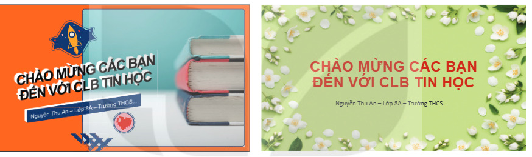
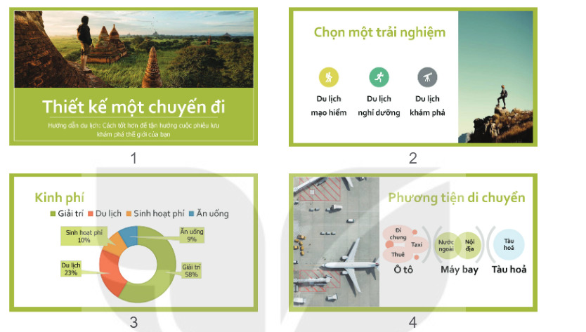
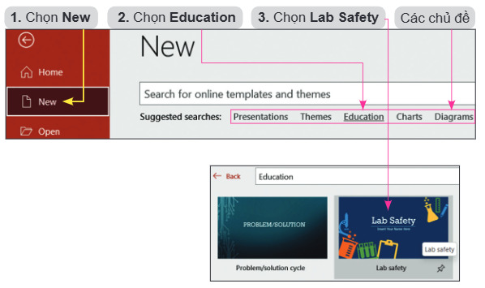
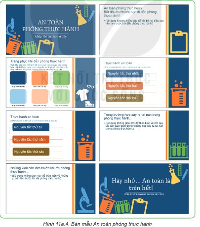
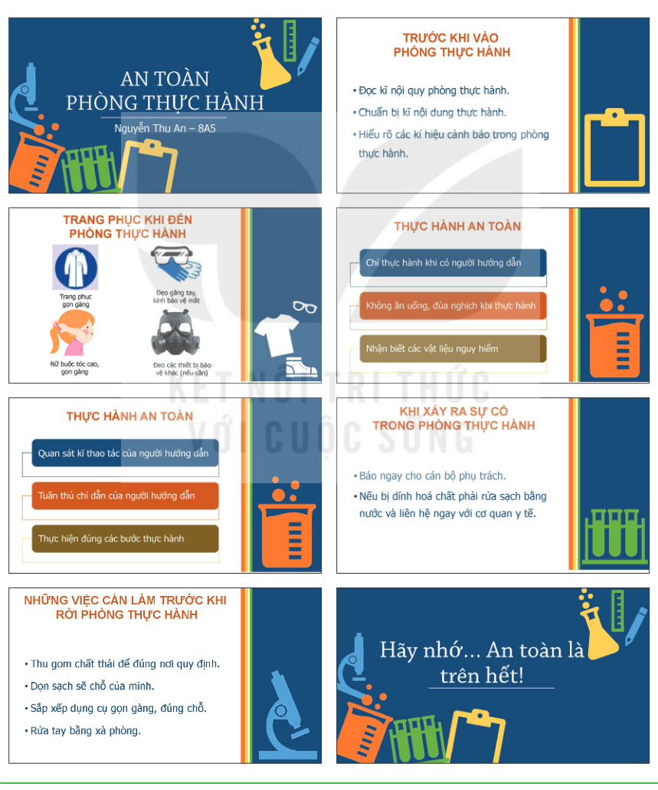
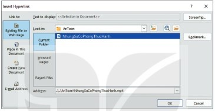

Dành cho giáo viên
Theo dõi lớp
| Học sinh / Nhóm | Đã nộp | Cập nhật |
|---|
Bước 1
1 Khởi động
Khám phá Hình ảnh khởi động
Trò chuyện Cùng An, Minh và Khoa
Đoạn trò chuyện gợi mở (không có trong SGK)
Minh: Trang chiếu của tớ nền trắng trơn, nhìn hơi buồn.
An: Trang của tớ thì mỗi trang một màu, không đồng bộ.
Khoa: Thử dùng bản mẫu có sẵn: màu sắc, phông chữ đã được phối đẹp cho mọi trang.
An: Trang của tớ thì mỗi trang một màu, không đồng bộ.
Khoa: Thử dùng bản mẫu có sẵn: màu sắc, phông chữ đã được phối đẹp cho mọi trang.
Khởi động So sánh các trang chiếu
Em hãy quan sát hai trang chiếu trong Hình 11a.1, so sánh hai trang chiếu này với trang chiếu số 1 em đã tạo ở phần thực hành Bài 10a và đưa ra nhận xét.

Ghi bài Khởi động
Sau khi thầy cô chốt, em chép nội dung dưới đây vào vở.
Bước 2 · Hình thành kiến thức mới
2.1 Bản mẫu trong phần mềm trình chiếu
Hoạt động 1 Làm thế nào để có thể tạo được bài trình chiếu đẹp, chuyên nghiệp?
Em hãy trả lời các câu hỏi sau: 1. Sử dụng phần mềm trình chiếu có tạo được các trang chiếu như Hình 11a.1 không? 2. Để tạo được các trang chiếu đó có cần nhiều thời gian không? 3. Làm thế nào để tạo được các trang chiếu đó?
Đọc hiểu Mẫu định dạng và bản mẫu
Đọc mục 1 (SGK trang 51–52). Ở chương trình Tin học lớp 7, em đã biết cách áp dụng các mẫu định dạng (Themes) cho bài trình chiếu của mình. Mẫu định dạng là một tập hợp màu sắc, phông chữ và hiệu ứng hình ảnh được xác định trước giúp bài trình chiếu có một giao diện thống nhất, chuyên nghiệp. Nâng cao hơn, phần mềm trình chiếu còn cung cấp các bản mẫu (Template) có sẵn. Bản mẫu là một bản thiết kế của một hoặc một nhóm các trang chiếu được lưu dưới dạng một tệp có phần mở rộng là .potx. Bản mẫu chứa bố cục, màu sắc, phông chữ, hiệu ứng, kiểu nền và cả nội dung. Em có thể sử dụng các bản mẫu có sẵn, có thể tạo các bản mẫu tuỳ chỉnh của riêng mình rồi lưu trữ, tái sử dụng và chia sẻ chúng với những người khác. Bản mẫu thường được thiết kế để dùng cho một mục đích, một chủ đề cụ thể (ví dụ như bài trình bày về một chuyến du lịch, một dự án kinh doanh, một bài học trên lớp,…). Vì vậy, ngoài các yếu tố thiết kế về giao diện (màu sắc, phông chữ, hình nền, hiệu ứng) thì các nội dung gợi ý đi kèm trong bản mẫu cũng khá có ích cho em khi tạo bài trình chiếu của mình. Hình 11a.2 là ví dụ một bản mẫu về chủ đề du lịch: bản mẫu đã thiết kế sẵn giao diện các trang chiếu và gợi ý các chủ đề nên có trong bài.

So sánh trên mô phỏng: bấm 📄 New, chọn một mục trong Themes (mẫu định dạng), rồi bấm New lần nữa và chọn một bản mẫu (ví dụ Thiết kế một chuyến đi). Xem mỗi cách tạo ra những gì.
Câu hỏi SGK trang 52
Ghi bài 1. Bản mẫu trong phần mềm trình chiếu
Sau khi thầy cô chốt, em chép nội dung dưới đây vào vở.
Bước 2 · Thực hành
2.2 Thực hành: Tạo sản phẩm số phục vụ học tập, giao lưu và trao đổi thông tin
Nhiệm vụ An toàn trong phòng thực hành
Em hãy tạo một bài trình chiếu về chủ đề An toàn trong phòng thực hành (phòng thực hành Tin học, thực hành Khoa học tự nhiên,…) với các yêu cầu sau: a) Sử dụng một bản mẫu có sẵn cho bài trình chiếu. b) Chỉnh sửa một vài thông số của bản mẫu để phù hợp hơn với nội dung. c) Đưa vào trang tiêu đề đường dẫn đến một video (hay tài liệu khác).
Hướng dẫn (SGK minh hoạ bằng Microsoft PowerPoint):
- a) Sử dụng một bản mẫu có sẵn cho bài trình chiếu. Chọn File/New để tạo một bài trình chiếu mới. Phần mềm trình chiếu sẽ đưa ra các bản mẫu có sẵn được sắp xếp theo các chủ đề để em lựa chọn. Em chọn Education và chọn bản mẫu có tên Lab Safety (Hình 11a.3). Nội dung trong bản mẫu viết bằng tiếng Anh; em có thể sử dụng các công cụ dịch từ tiếng Anh sang tiếng Việt để hỗ trợ trong việc hiểu nội dung. Bản mẫu Lab Safety có nội dung tương tự như Hình 11a.4. Bản mẫu đưa ra các gợi ý rõ ràng về các nội dung cần có cho một bài trình chiếu với chủ đề An toàn phòng thực hành, bên cạnh đó còn có hướng dẫn chi tiết cách nhập nội dung, cách trình bày và sắp xếp. Em nhập nội dung bài trình chiếu theo hướng dẫn để hoàn thành bài trình chiếu.
- b) Chỉnh sửa bản mẫu để phù hợp với nội dung. Em có thể thay đổi phông chữ, cỡ chữ, màu nền, thêm hoặc bớt trang chiếu để phù hợp với nội dung trình chiếu. Kết quả bài trình chiếu có thể tương tự như Hình 11a.5.
- c) Đưa vào trang tiêu đề đường dẫn đến một video. Giả sử em muốn giới thiệu một video (có tên NhungSuCoPhongThucHanh.mp4) có nội dung cảnh báo về các tai nạn có thể xảy ra trong phòng thực hành. Em có thể đưa đường dẫn đến tệp video đó vào trang tiêu đề để mở trong khi trình chiếu: chèn vào trang chiếu một hình ảnh minh hoạ để đặt liên kết (hoặc chọn luôn hình ảnh chiếc bình màu vàng có sẵn trên trang chiếu); nháy chuột chọn hình ảnh minh hoạ, chọn Insert/Links/Link; trong cửa sổ Insert Hyperlink, chọn đường dẫn đến tệp NhungSuCoPhongThucHanh.mp4 (Hình 11a.6).
- d) Lưu tệp. Chọn File/Save để lưu tệp với tên AnToanPhongThucHanh.pptx.


Làm trên mô phỏng: 📄 New → Education → An toàn phòng thực hành (Lab Safety). Gõ đè nội dung lên các dòng gợi ý. Để gắn liên kết: nháy vào hình chiếc bình ở trang tiêu đề rồi bấm 🔗 Link. Bấm ▶ Trình chiếu và nháy vào chiếc bình để thử mở video.


Ghi bài 2. Thực hành
Sau khi thầy cô chốt, em chép nội dung dưới đây vào vở.
Bước 3
3 Luyện tập
Luyện tập Bản mẫu và liên kết
Câu 2: làm tiếp trên mô phỏng ở phần Thực hành – chọn một đối tượng khác trên trang tiêu đề (ví dụ hình kính hiển vi) rồi gắn liên kết tới tệp KiHieuCanhBao.docx.
Ghi bài Luyện tập
Sau khi thầy cô chốt, em chép nội dung dưới đây vào vở.
Bước 4
4 Vận dụng
Dự án STEM Giới thiệu bình lọc nước tái chế
Nhóm em dùng bản mẫu để tạo nhanh bài trình chiếu giới thiệu bình lọc nước tại Ngày hội STEM. Dự án 2 tiết theo quy trình 5 bước, làm sản phẩm ngay trên máy.
Vận dụng Bản mẫu cho bài trình chiếu lễ ra mắt CLB
Em hãy tìm một bản mẫu (có sẵn trong phần mềm trình chiếu hoặc được chia sẻ trên mạng) và sử dụng để tạo lại bài trình chiếu trong tệp LeRaMatCLBTinhoc.pptx. Thực hiện thay đổi các định dạng cần thiết để tạo một bản mẫu phù hợp với bài trình chiếu. Ghi lại tệp trình chiếu dưới dạng bản mẫu, tên tệp có dạng .potx để tái sử dụng và chia sẻ khi cần.
Phác thảo trên mô phỏng, cuối cùng bấm 💾 Save As và chọn kiểu PowerPoint Template (*.potx).
Phác thảo trên mô phỏng, cuối cùng bấm 💾 Save As và chọn kiểu PowerPoint Template (*.potx).
Ghi bài Vận dụng
Sau khi thầy cô chốt, em chép nội dung dưới đây vào vở.